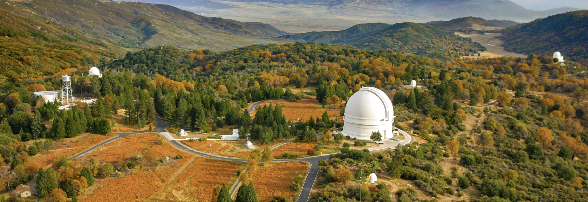
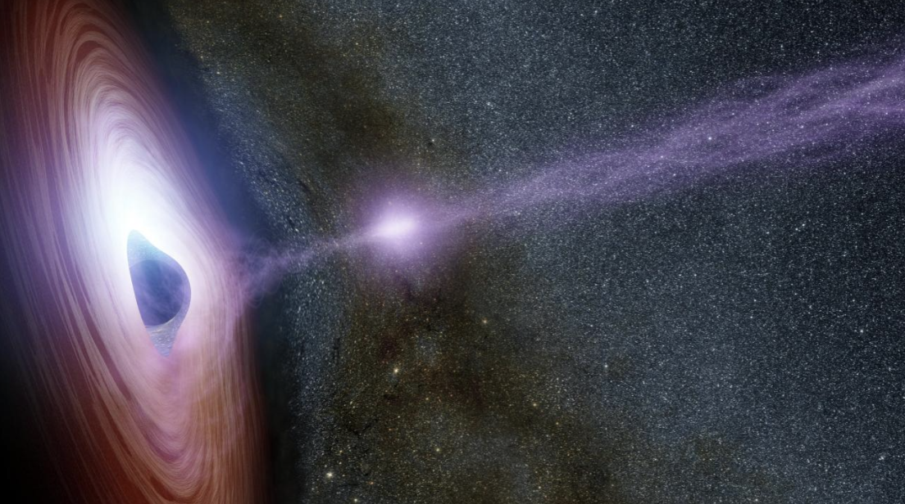

Machine Learning: Detections of Astrophysical Transient Signatures
Drake Miller III
Department of Astrophysical and Planetary Sciences
University of Colorado Boulder

Introduction
The origin of supermassive black holes remains an exciting question in astrophysics. A promising theory to explain how these compact objects form and evolve involves hierarchical galaxy formation across cosmic time. It is currently believed that all galaxies have a black hole at their center, some of which are actively accreting, which drives the evolution of the host galaxy. Massive black holes are capable of growing independently via accretion and mutually via hierarchical galaxy formation (Dayal et al. 2019). This makes black holes promising multi-messenger sources through the emission of both electromagnetic radiation and gravitational waves. Recent studies using pulsar timing array (PTA) data show promising evidence for supermassive black hole mergers across cosmic time (Leclere et al. 2026, and Tomson et al. 2026). However, our understanding of multi-messenger signals originating from individual sources remains elusive.
In the hierarchical galaxy formation scenario, the two central black holes will inspiral toward each other and form a bound pair near the center of the newly-merged galaxy. During this process, it is possible that the interaction between the binary and the surrounding matter is not sufficient enough to remove orbital energy from the binary, causing the binary to stall at ∼ 1pc separations (the "final-parsec problem") (C.J. Nixon et al. 2011). The presence of a circumbinary disk that surrounds the binary would induce torques upon the black hole binary system enclosed within (Rowan et al. 2023), providing a pathway for overcoming the "final parsec problem". Supermassive black hole binaries that overcome this and ultimately merge provide an environment in which many transients can originate. In general, these transients arise from the re-distribution of energy through perturbations of the surrounding stars and gas.
The upcoming Laser Interferometer Space Antenna (LISA) will provide the next leap in regard to our understanding of supermassive black hole growth across cosmic time, along with the associated multi-messenger signals. With LISA acting as an all-sky survey, however, this will introduce the challenge of identifying numerous sources within the detection volume. Given this challenge, it is crucial to begin formulating relevant science questions that address the detection of electromagnetic counterparts to gravitational wave emission, which enables precise source localization and characterization. These electromagnetic counterparts can include transients such as supernovae (SNe), tidal disruption events (TDEs), quasi-periodic eruptions (QPEs), fast radio bursts (FRBs), gamma-ray bursts (GRBs), and more. In the age of transient astronomy, facilities such as the Zwicky Transient Facility (ZTF) are detecting up to 100,000 transients per night. Upcoming missions such as the Vera C. Rubin Observatory will be able to detect up to millions of transients per night (https://noirlab.edu/public/blog/tracking-transients-with-rubin/). Therefore, it is becoming more crucial for astronomers to be able to distinguish between different types of transient signatures and quantify their variations.

Since transients are simply defined as short-timescale bursts of radiation from astrophysical environments, there are many different types of transients. The most common is supernovae explosions, which are the result of stars that can no longer maintain hydrostatic equilibrium. Supernovae can also be split into many subcategories, but the most well-known are Type 1a supernovae (coming from a binary system with at least one white dwarf star) and Type II supernovae (core-collapse). Supernovae are often used as "standard candles", meaning that their distances can be accurately measured and used as a reference for other distances in space. Active galactic nuclei (AGN) produce a number of other transients. These extreme environments in the centers of galaxies are known to have an actively accreting black hole at the center. Figure 2 shows an artist rendering of an AGN with a relativistic jet being launched from the central black hole. Gamma ray bursts and fast radio bursts are two other types of transients in which the source is largely unknown. Gamma ray bursts are the most energetic transients that we know of in the universe, and fast radio bursts are often connected to magnetars (and the search for extraterrestrial life). Finally, many transients can be attributed to stars interacting with their environments. Tidal disruption events (TDEs) come from stars being ripped apart by black holes when they travel too close, and Quasi-Periodic eruptions (QPEs) may be caused by stars interacting with an accretion disk. All of these transients produce different observable signatures including wavelength range, flux amplitude, recurrence times, and more.
Several questions will be addressed throughout the completion of this project:
- What is considered a transient?
- Where are transient detections located on the sky?
- How many distinct transient types have we discovered?
- How do the brightness of different transient detections vary?
- How long do different transient detections last?
- How much variability is shown by individual transients?
- In what wavelength bands do we observe different transients?
- What are the sources of different transient events?
- Are different transient detections correlated with each other?
- Can fundamental machine learning techniques be used to classify modern transient observations?